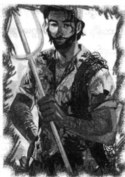

ပင်လယ်အောက်မှ ဆွေမျိုးများနှင့် တွေ့ဆုံခြင်း
နတ်သွေးနှောသူများအတွက် အိပ်မက်ကောင်းကောင်း မက်ခြင်းမှာ ရှားပါးသောကိစ္စ ဖြစ်သည်။ ပြောရလျှင် ရိုးရိုး အိပ်မက်ဟူ၍ မရှိသလောက်ဖြစ်ပြီး နိမိတ်များနှင့် အခြားစိတ်ပျက်စရာများကိုသာ မက်လေ့ရှိ၏။
အိပ်မက်ထဲတွင် ပါစီမှာ မှောင်မည်းနေသော တောင်ထိပ်ရှိ နန်းတော်တစ်ခု ထဲသို့ ရောက်နေသည်။ အိုသိုင်ရာ တောင်ထိပ်ရှိ တိုက်တန်တို့၏ နန်းတော်ဖြစ်ပြီး ကယ်လ်လီဖိုးနီးယားရှိ တန်မဲလ်ပေ့စ်တောင်ထိပ်၌ ဖြစ်၏။ ဂရိလက်ရာ အနက်ရောင် ကျောက်တိုင်လုံးကြီးများဖြင့် တည်ဆောက်ထားပြီး တိုက်တန်တို့၏ ရုပ်တုများကိုပါ တွေ့ရသည်။ မီးတိုင်များ ထွန်းညှိထားသော ခန်းမကြီးအလယ်တွင် ဝဲကတော့ ထိုးနေသော တိမ်တိုက်များအားထမ်းရင်း ရုန်းကန်နေသူ က အက်လတ်စ်ပင်။
ခန္ဓာကိုယ်ကြီးမားလှသော လူကြီးနှစ်ယောက်မှာ ကြေးမီးဖိုရှိ မီးတောက်များထဲမှ ပုံရိပ်များကို ကြည့်နေကြသည်။
“တော်တော်ပြင်းတဲ့ ပေါက်ကွဲမှုပဲ”
ထိုသူမှာ အနက်ရောင်တွင် ငွေရောင် အစက်အပြောက်လေးများပါသော ချပ်ဝတ်တန်ဆာကို ဝတ်ထားပြီး ဆိတ်ဦးချို ကွေးကွေးများ တပ်ထားသည့် စစ်ခမောက်ကို ဆောင်းထားသည်။
“အရေးမကြီးပါဘူး”
နောက်တိုက်တန်တစ်ယောက်မှာ ရွေရောင်ဝတ်ရုံနှင့်ဖြစ်ပြီး ခရိုနော့စ်လိုပင် ရွှေရောင်မျက်လုံးများ ရှိကြသည်။ သူ့ခန္ဓာကိုယ် တစ်ခုလုံး အလင်းရောင်များ တောက်နေသည်မှာ နေနတ်သား အပိုလိုကဲ့သို့ပင် ဖြစ်သည်။ သို့သော် တိုက်တန်၏ ကိုယ်မှ အလင်းရောင်မှာ ပို၍ အမြင်စူးရှပြီး မျက်နှာအမူအရာမှာလည်း ရက်စက်ပုံ ရသည်။
“ငါတို့ စိန်ခေါ်တာကို နတ်ဘုရားတွေ လက်ခံသွားပြီပဲ … သိပ်မကြာခင် ပျက်စီးသွားကြမှာပါ …”
မီးပုံထဲမှ ပုံရိပ်များကို နားလည်ရခက်လှသည်။ မုန်တိုင်းကျနေပြီး အဆောက်အအုံများ ပြိုကျကာ လူများ အော်ဟစ် ပြေးလွှားနေကြ၏။
ရွှေရောင်တိုက်တန်က …
“ငါ အရှေ့ဆက်သွားပြီး တပ်တွေ စုစည်းမယ် … ခရီယို့စ် ... မင်းက ဒီကောင့်ကို စောင့်ရှောက်ရင်း နေခဲ့ …”
ဆိတ်ဦးချိုခမောက်နှင့် သူက …
“အမြဲတမ်း ငါပဲ သခင်တဲ့ ... ငါပဲ ပေါက်ကရတွေ တာဝန်ယူရတယ် … တောင်အရပ်ရဲ့အရှင် … ကြယ်တွေရဲ့ အရှင်သခင်တဲ့ … ဟော … အခုလည်း အက်လတ်စ်ကို စောင့်ကြည့်ပြီး နေခဲ့ရမယ် … မင်းတို့တွေကျ အပြင်မှာ ပျော်လို့ …”
တိမ်များ ဝဲလှည့်နေသော ကောင်းကင်အောက်မှ အက်လတ်စ်က နာကျင်စွာဖြင့် အော်ဟစ်လိုက်သည်။
“ငါ့ကို လွှတ်ပေးကြ … ငါက အတော်ဆုံး တိုက်တန် စစ်သည် တစ်ယောက် … ဒီကောင်းကင်ကို တခြားသူ ထမ်းခိုင်းကြ”
ရွှေရောင်တိုက်တန်က …
“တိတ်တိတ်နေစမ်း … မင်းကို အခွင့်အရေး ပေးခဲ့ပြီးပြီ အက်လတ်စ် မင်း မအောင်မြင်ခဲ့ဘူး … ခရိုနော့စ်က မင်းကို လက်ရှိတာဝန်မှာ သဘောအကျဆုံး ပဲ … ခရီယိုစ့် … မင်းလည်း ကိုယ့်တာဝန်ကိုယ် ကျေအောင်လုပ်”
ခရီယိုစ့်က …
“စစ်အင်အား ပိုလိုလာရင် ဘယ်လိုလုပ်မလဲ … အနောက်တိုင်း ဝတ်စုံအပြည့်နဲ့ တူတော်လေးကို တိုက်ပွဲထဲမှာ မင်းအားကိုးလို့ မရဘူး”
ရွှေရောင်တိုက်တန်က ရယ်ရင်း …
“သူ့ကို ခေါင်းထဲ မထည့်ပါနဲ့ … နတ်ဘုရားတွေက ငါတို့ရဲ့ ပထမဆုံး စိန်ခေါ်ပွဲကိုတောင် မနည်း ရင်ဆိုင် နေရတာ … ငါတို့အင်အား ဘယ်လောက်ရှိသလဲ သူတို့ မသိပါဘူး… ရက် သိပ်မကြာခင် အိုလံပတ်စ် ပျက်စီးတော့မှာပါ … ငါတို့အားလုံး ဒီမှာပြန်ဆုံပြီး ဆဋ္ဌမမြောက် ခေတ်သစ်ကို ကြိုကြတာပေါ့ ....”
ရွှေရောင်တိုက်တန်မှာ မီးတောက်များအဖြစ် ပြောင်းလဲသွားပြီးနောက် ပျောက်ကွယ်သွားသည်။
ခရီယို့စ်က စိတ်ပျက်စွာဖြင့် ...
“သူကျ မီးတွေလို ပုံစံပြောင်းနိုင်တယ် … ငါကျ ဆိတ်ဦးချိုခမောက်နဲ့ …”
မြင်ကွင်းပြောင်းသွားပြီးနောက် အပြင်ဘက် အမှောင်ရိပ်ထဲတွင် တိုက်တန်များ ပြောသမျှကို ချောင်းနားထောင် နေသည့် ကောင်လေးတစ်ယောက်အား တွေ့လိုက်ရသည်။ အနက်ရောင်ဆံပင်၊ ဖျော့တော့တော့ အသားအရေနှင့် အနက်ရောင် အဝတ်အစားများကို ဝတ်ထားသူမှာ ဟေးဒီးစ်၏သားဖြစ်သူ ပါစီ့ သူငယ်ချင်း နီကို ဒီအန်ဂျလိုပင် ဖြစ်သည်။
နီကိုက ပါစီ့ကို တည့်တည့်ကြည့်ရင်း …
“မင်း တွေ့လား ပါစီ … အချိန် မရှိတော့ဘူးနော် … ငါ့အစီအစဉ်အတိုင်း မလုပ်ရင် သူတို့ကို မင်း ရင်ဆိုင်နိုင် မှာလား …”
ထိုစကားကြောင့် ပါစီ့ တစ်ကိုယ်လုံး အေးစက်သွားပြီး အရာရာ မှောင်အတိကျသွားခဲ့သည်။
“ပါစီ …”
ခပ်နက်နက် အသံတစ်သံကို ကြားရပြီး ပါစီ ခေါင်းတစ်ခုလုံး ကိုက်ခဲနေမှန်း သတိထားမိလိုက်သည်။ သူ့ကို ငုံ့ကြည့်နေသော အရိပ်တစ်ရိပ်ကို ခပ်ဝါးဝါး မြင်လာရသဖြင့် မျှော်လင့်ချက်ဖြင့် မေးမိသည်။
“ဘက်ကင်ဒေါ့ဖ်လား …”
“မဟုတ်ဘူး …အစ်ကို … ငါပါ ....”
ပါစီ့မျက်လုံးများ တဖြည်းဖြည်း ပြန်၍ကြည်လင်လာ၏။ သူ မြင်ခဲ့ရသော လူရိပ်မှာ ဆိုက်ကလော့ ဘီလူး တစ်ကောင်သာ ဖြစ်ပြီး စိုးရိမ်စွာဖြင့် သူ့ကို ကြည့်နေသော အညိုရောင် မျက်လုံးကြီးတစ်လုံးကိုပါ မြင်လိုက်ရသည်။
“တိုင်ဆန် …”
တိုင်ဆန် ပြုံးလာပြီး …
“ဦးနှောက်တွေ အကောင်းကြီး ရှိသေးတာပဲ”
ထိုစကားမှန်သည်ဟု ပါစီ မပြောနိုင်။ သူ့တစ်ကိုယ်လုံး အေးစက်နေသည်ဟု ခံစားရပြီး စကားသံကအစ ပုံမှန် မဟုတ်။ တိုင်ဆန့်အသံကို ကြားနေရသည့်တိုင် တုန်ခါမှုမှတစ်ဆင့် လာသောအသံဟု ထင်ရပြီး တိုက်ရိုက်ကြားရခြင်းမျိုး မဟုတ်။
ပါစီ ထထိုင်လိုက်လျှင် ခြုံထားသောစောင်က မျောလွင့်သွား၏။ အိပ်ရာမှာ ပင်လယ်ရေမှော် တစ်မျိုးဖြင့် လုပ်ထားခြင်း ဖြစ်ပြီး အခန်းကို ခရုခွံများစွာဖြင့် အလှ ဆင်ထားသည်။ မျက်နှာကြက်တွင် လွင့်မျောနေသော ဘောလုံးခန့် အရွယ်ရှိ ပုလဲလုံးကြီးများမှ အလင်းရောင် ရနေခြင်း ဖြစ်သည်။ ပင်လယ်ရေအောက်သို့ ပါစီ ရောက်နေခြင်း ဖြစ်သည်။
ပင်လယ်ရေအောက် ရောက်နေသောကိစ္စမှာ ပိုဆိုက်ဒွန်၏ သားဖြစ်သော ပါစီအတွက် ပြဿနာမရှိလှ။ ရေအောက်တွင် အေးအေးဆေးဆေး အသက်ရှူနိုင်သလို ရေမစိုချင်ပါက ပါစီ့အဝတ်များပင် ရေစိုလိမ့်မည်မဟုတ်။ သို့သော် တူငါးမန်း တစ်ကောင် ပြတင်းပေါက်မှ အေးအေးဆေးဆေး ကူးခတ်ဝင်လာပြီး တစ်ဖက်ခန်းသို့ ဆက်ကူး သွားပုံကို မြင်ရသည်ကမူ အတော်လေး ထူးခြားနေ၏။
“ငါ ဘယ်ရောက်နေတာလဲ”
“အဖေ့ နန်းတော်လေ …”
ပုံမှန်အချိန်သာဆိုပါက ပါစီ စိတ်လှုပ်ရှားမိမည် ဖြစ်သည်။ ပိုဆိုက်ဒွန်၏ နန်းတော်သို့ ပါစီ တစ်ခါမှ မရောက်ခဲ့ ဖူး။ နှစ်နှင့်ချီ၍ သွားချင်ခဲ့ဖူးသော နေရာလည်း ဖြစ်သည်။ သို့သော် ယခုအချိန်တွင် ပါစီ့ခေါင်းတစ်ခုလုံး ကိုက်ခဲနေပြီး အင်္ကျီ တစ်ထည်လုံးမှာလည်း မီးပေါက်ရာ ဗရပွနှင့်ဖြစ်နေသည်။ ပင်လယ်ထဲ ရောက်နေသဖြင့် လက်မောင်းနှင့် ခြေထောက်မှ ဒဏ်ရာများ ပျောက်သွားသည်မှာ မထူးဆန်း။ သို့တိုင် တစ်ကိုယ်လုံး လက်စ်ရီဂိုနီးယန်း ဘီလူးများ တက်နင်း ထားသကဲ့သို့ ခံစားနေရဆဲ ဖြစ်သည်။
“ဘယ်လောက် ကြာသွားပြီလဲ …”
“မနေ့ညက တွေ့တာ …ပင်လယ်ထဲ ပြုတ်ကျလာလို့”
“အန်ဒရိုမီဒါ မင်းသမီး သင်္ဘောကြီးရော”
“ပေါက်ကွဲသွားပြီ”
“သင်္ဘောပေါ်မှာ ဘက်ကင်ဒေါ့ဖ် ပါသွားတယ် … သူ့ကို ရှာတွေ့လား..”
တိုင်ဆန့်မျက်နှာ ပျက်သွား၏။
“ဟင့်အင်း … မတွေ့ဘူး … စိတ်မကောင်းပါဘူး”
ပြတင်းပေါက် မှတစ်ဆင့် ပင်လယ်ရေနက်ထဲသို့ ပါစီ ငေးကြည့်နေမိသည်။ ဆောင်းဦးရာသီ ဆိုလျှင် ဘက်ကင် ဒေါ့ဖ် ကောလိပ်သွားရတော့မည် ဖြစ်သည်။ ရည်းစားလည်း ရှိသလို သူငယ်ချင်းများစွာရှိပြီး ဘဝတွင် လုပ်စရာများစွာ ရှိသူ ဖြစ်သည်။ သူ့နောက်ကလိုက်၍ ပင်လယ်ထဲများ ခုန်ချနိုင်မလား ပါစီ မျှော်လင့်မိ၏။ သို့သော် ပေတစ်ရာကျော် မြင့်သော ကုန်းပတ်ပေါ်မှ ပင်လယ်ရေထဲ ခုန်ချလျှင် ဘက်ကင်ဒေါ့ဖ်မှာ ရေထဲ၌ ပါစီ့လို အသက်ရှင်နိုင်မည် မဟုတ်။ ထို့အပြင် ပေါက်ကွဲချိန်၌ ဝေးဝေး ပြေးနိုင်မည်လည်း မဟုတ်ချေ။
ဘက်ကင်ဒေါ့ဖ် သေပြီဟု ပါစီ သိနေ၏။ သင်္ဘောကြီးကို ဖျက်ဆီးနိုင်ရန် သူ့ကိုယ်သူ စတေးခဲ့ပြီး ပါစီသူ့ကို ချန်ထားရစ်ခဲ့မိသည်။ အိပ်မက်ထဲတွင် တိုက်တန်များက သင်္ဘောပေါက်ကွဲမှုကို ဘာမှအရေးမကြီးသလို ဆွေးနွေးနေသည် အား ပါစီ သတိရလာ၏။ နီကိုက သူ့အကြံဉာဏ်အတိုင်း မလိုက်နာလျှင် ခရိုနော့စ်ကို နိုင်စရာ မရှိဟု သတိပေးခဲ့သည်။ သို့သော် ထိုအကြံမှာ အန္တရာယ်များလွန်းသဖြင့် တစ်နှစ် နီးပါး ပါစီ အချိန်ဆွဲနေခဲ့မိသည်။
အဝေးဆီမှ ပေါက်ကွဲမှုတစ်ခုကြောင့် တစ်ခန်းလုံး တုန်ခါသွား၏။ အပြင်တွင် အစိမ်းရောင်အလင်းများကို မြင်နေရပြီး ပင်လယ်ပြင်တစ်ခုလုံး နေ့ခင်းပမာ လင်းထိန် သွားစေ၏။
“ဘာဖြစ်တာလဲ …”
တိုင်ဆန် စိတ်ပူနေပုံရသည်။
“အဖေ ရှင်းပြပါလိမ့်မယ် … လာ … သူ မိစ္ဆာတွေကို ဖောက်ခွဲပစ်နေတယ်”
တိုက်ပွဲသာမဖြစ်လျှင် ရေအောက်နန်းတော်ကြီးမှာ ပါစီ မြင်ဖူးသမျှ နန်းတော်ထဲ၌ အံ့ဩစရာအကောင်းဆုံး ဖြစ်ပေသည်။ အမိုးပေါ်သို့ ကူးခတ်တက်ခဲ့ကြလျှင် မြင်လိုက်ရသောမြင်ကွင်းက ရေအောက်၌သာ မဟုတ်လျှင် အသက်ရှူ မှားသွားနိုင်၏။
နန်းတော်ကြီးမှာ အိုလံပတ်စ်တောင်ထိပ်ကဲ့သို့ ကျယ်ဝန်းပြီး ဥယျာဉ်များစွာကို တွေ့နိုင်သည်။ သန္တာ ကျောက်တန်းများ ပင်လယ်ရေအောက်ရှိ အပင်များနှင့် ဥယျာဉ်များမှာ လှပနေပြီး အဆောက်အအုံများကို ပင်လယ်ခရု များဖြင့် ပြုလုပ်ထားသည်။ အဖြူရောင် ဖြစ်သော်လည်း သက်တံရောင်များ ဖြာနေ၏။ ပြတင်းပေါက်များမှ ငါးနှင့် ရေဘဝဲများ ဝင်လိုက်၊ ထွက်လိုက် လုပ်နေကြပြီး လမ်းများကို အရောင် တောက်ပနေသော ပုလဲများနှင့် ခရစ္စမတ်သဖွယ် ပြင်ဆင်ထားသည်။
ဝင်းကြီးအတွင်းတွင် စစ်သည်များပြည့်နေပြီး ရေသူထီးများဖြစ်ကြကာ ခါးအောက်ပိုင်းမှာ ငါးကိုယ်၊ ခါးအပေါ် ပိုင်းမှာ လူခန္ဓာကိုယ် ဖြစ်သော်လည်း အသားအရေမှာ အပြာရောင် ဖြစ်ကြသည်။ အချို့မှာ ဒဏ်ရာရသူများကို ပြုစုပေးနေ ကြပြီး အချို့မှာ ဓား၊ လှံများကို သွေးနေကြ၏။ ပါစီ့ဘေးမှ ရေသူထီးတစ်ယောက် ဖြတ်ကူးသွားရာ မျက်လုံးများမှာ အစိမ်းရောင် တောက်ပနေကြပြီး ပါးစပ်ထဲမှ သွားများမှာ ငါးမန်းသွားများကဲ့သို့ ဖြစ်ကြသည်။ ပြောရလျှင် ကာတွန်းကား ထဲမှ ရေသူထီးပုံနှင့် လုံးဝ လုံးဝ မတူချေ။
ဝင်းကြီးအပြင်တွင် ခံစစ်ကို အကြီးအကျယ် ပြင်ဆင်ထားပြီး မျှော်စင်များ၊ နံရံများနှင့် လက်နက်ကြီးများစွာကို တွေ့ရသော်လည်း အများစုမှာ ပျက်စီးနေကြပြီ ဖြစ်သည်။ ကျန်နေရာများမှာလည်း အစိမ်းရောင်မီးများ တောက်လောင် လျက် ရှိကာ ရေအောက်၌ပင် လောင်ကျွမ်းနိုင်သည့် ဂရိမီးဗုံးများပင်။
အဝေးသို့ မျှော်ကြည့်လျှင် ပင်လယ်ရေအောက်ရှိ တိုက်ပွဲကြီးကို မြင်နိုင်ပြီး ပေါက်ကွဲမှုများစွာကို မြင်ရကာ တိုက်ပွဲဝင်နေသော တပ်များကို ဝိုးတဝါး မြင်နိုင်၏။ ပုံမှန်လူတစ်ယောက်သာ ဆိုပါက ပင်လယ်ရေအောက်တွင် မှောင်မည်းနေသဖြင့် ဘာကိုမှ မြင်နိုင်မည်မဟုတ်။ ပင်လယ်ရေအောက် ဖိအားဒဏ်ကြောင့် ပုံမှန်လူသား ဆိုလျှင် ဤနေရာ၌ ပြားချပ်သွားနိုင်ပြီး အအေးဒဏ်ကလည်း သွေးခဲသွားနိုင်၏။ ပါစီ့မျက်လုံးများမှာ အပူလှိုင်းကို မြင်နိုင်သည့်တိုင် ဘာကိုမှ သဲသဲကွဲကွဲ မမြင်ရ။
နန်းတော်အစွန်ရှိ အနီရောင်အမိုးနှင့် အဆောင်တစ်ခု ပေါက်ကွဲသွားပြီး မီးတောက်များ၊ အပျက်အစီးများမှာ ဥယျာဉ် ထဲသို့ လွင့်စဉ်ကျကုန်သည်။ အပေါ်ဘက်ဆီတွင် ဧရာမ အရိပ်မည်းကြီးကို မြင်ရပြီး မိုးမျှော်တိုက်ကြီးများထက် ပို၍ကြီးမားသည့် ကင်းမွန်ကြီးတစ်ကောင်ဖြစ်ကာ နှာမောင်းလက်တံများဖြင့် စစ်သည်များကို ရိုက်နေ၏။ ထိုအခိုက်မှာပင် အမြင့်ဆုံး အဆောက်အအုံတစ်ခု၏ အမိုးပေါ်မှ အပြာရောင် အလင်းတန်းတစ်ခု ထိုးထွက်လာသည်။ အလင်းတန်းမှာ ကင်းမွန်ကြီးကို ထိမိသည်နှင့် ကင်းမွန်ကြီးမှာ ချက်ချင်း အရည်ပျော်ကျသွားတော့၏။
“အဖေပဲ …”
အလင်းလာရာဆီသို့ တိုင်ဆန် လက်ညှိုးညွှန်ပြရင်း ဆို၏။
“အဖေ့လက်ချက်လား ..”
ရုတ်တရက် မျှော်လင့်ချက် ပြန်ရှိလာသလို ခံစားရသည်။ အဖေ့တွင် မယုံနိုင်လောက်အောင် ကြီးမားသော အစွမ်းတို့ ရှိပုံရပြီး ယခုစစ်ပွဲကို ကောင်းကောင်း ရင်ဆိုင်နိုင်မည့်ပုံ ရှိ၏။
“စစ်ပွဲထဲ မင်း ပါနေရပြီလား … ရန်သူတွေကို ထုချင်တိုင်း ထုနေရပြီလား …”
တိုင်ဆန့်မျက်နှာ စူပုပ်ပုပ် ဖြစ်သွားသဖြင့် အဖြေကို ပါစီ ကြိုသိလိုက်သည်။
“လက်နက်တွေ ပြင်ပေးနေရတာ … လာ … အဖေ့ဆီ သွားကြရအောင်”
ပါစီ့တစ်သက်တွင် အဖေကို လေးငါးကြိမ်ထက် ပိုမတွေ့ဖူးဟုဆိုပါက ပုံမှန် လူများအနေဖြင့် အံ့ဩစရာ ဖြစ်ပေ လိမ့်မည်။ ဂရိနတ်ဘုရားများမှာ သူတို့ကလေးများ၏ ကျောင်းကပွဲသို့ လာလေ့ရှိသူများ မဟုတ်ကြ။ မည်သို့ဖြစ်စေ ပိုဆိုက်ဒွန်ကို မြင်လျှင် ချက်ချင်းမှတ်မိမည်ဟု ထင်မိသည်။
သို့သော် ထင်ထားသလို ဖြစ်မလာချေ။ အဆောက်အအုံ၏ အမိုးမှာ အမိုးဖွင့်ပုံစံဖြစ်ပြီး ကြမ်းပြင်တွင် ရောင်စုံ ကျောက်ပြားများဖြင့် စီထားသော နန်းတော် တစ်ခုလုံးစာအတွက် မြေပုံကို မြင်နိုင်၏။ ကျောက်ပြားများမှာ ရွေ့လျား နေကြပြီး အရောင်မတူပုံအရ တပ်တစ်တပ်စီကို ကိုယ်စားပြု၏။ ပြင်ပတွင် ပြိုကျပျက်စီး သွားသော အဆောက်အအုံ များမှာ ပုံထဲတွင်လည်း ပျက်စီးလျက် ရှိကြသည်။
ဤမြေပုံကို ဝန်းရံလျက် စစ်သည်များစွာ ကြည့်နေကြသော်လည်း မည်သူမှ အဖေနှင့် မတူ။ ခန္ဓာကိုယ်ထွားကာ၊ နေလောင်ထားသော အသားအရေ၊ မုတ်ဆိတ်မည်းမည်းနှင့် ဟာဝေယံရှပ်၊ ဘောင်ဘီတိုကို ဝတ်လေ့ရှိသူအား လိုက်ရှာ မိနေခြင်းဖြစ်၏။ ထိုပုံစံမျိုး တစ်ယောက်မှမရှိ။ ရေသူထီးတစ်ယောက်တွင် ငါးအမြီး နှစ်ခွပါပြီး အစိမ်းရောင် အသားအရေ ရှိကာ ချပ်ဝတ်တန်ဆာ၌ ပုလဲများစွာ စီခြယ်ထား၏။ ဆံပင်အနက်ကို ကျစ်ဆံမြီးကျစ်ထားပြီး အသက် ငယ်သေးပုံရသော် လည်း လူသားများကဲ့သို့ ရုပ်ကြည့်ပြီး အသက်တွက်ရန် မလွယ်ချေ။ အသက်ထောင်ချီ ရှိနိုင်သလို အသက်သုံးနှစ်လည်း ဖြစ်နိုင်၏။
ရေသူထီး နံဘေးတွင် ဆံပင်ညိုညို၊ မုတ်ဆိတ်ဖြူဖြူနှင့် အဘိုးအိုတစ်ယောက် ရှိပြီး ချပ်ဝတ်တန်ဆာများမှာ သူ့အတွက် လေးလံလွန်းနေပုံ ရသည်။ အစိမ်းရောင် မျက်လုံးများရှိပြီး သတ္တုတောင်ဝှေးကြီးတစ်ခုကို ထောက်လျက်မှီရင်း မြေပုံအား လေ့လာနေ၏။ သူ့ညာဘက်တွင် အစိမ်းရောင် ချပ်ဝတ်တန်ဆာနှင့် လှပသော အမျိုးသမီး တစ်ယောက်ရှိကာ အနက်ရောင်ဆံပင်ရှည်များနှင့် ကဏန်းလက်မသဖွယ် ဦးချိုလေးများအား တွေ့ရသည်။ လင်းပိုင်တစ်ကောင်ကိုလည်း တွေ့ရပြီး သာမန် လင်းပိုင်တစ်ကောင်သာ ဖြစ်သော်လည်း မြေပုံကို စူးစူးစိုက်စိုက် ကြည့်နေ၏။
အဘိုးအိုက …
“ဒဲလ်ဖင် … ပလေမွန်နဲ့ သူ့ငါးမန်းတွေကို အနောက်ဘက် လွှတ်လိုက် … လီဗိုင်သန်တွေကို ရှင်းပစ်မှဖြစ်မယ် …”
လင်းပိုင် ပြန်ပြောသောအသံမှာ ငါးတစ်ကောင်၏ အသံသာ ဖြစ်သော်လည်း ပါစီစိတ်ထဲတွင် အဓိပ္ပာယ်ကို အလိုလို သိနေ၏။
“အမိန့်အတိုင်းပါ အရှင်”
အဘိုးအိုကိုကြည့်ရင်း ပါစီ ဘာပြောရမှန်းမသိ။ မဖြစ်နိုင်ဟု ထင်ရသော်လည်း လှမ်း၍ ခေါ်ကြည့်မိသည်။
“အဖေ …”
မော့ကြည့်လာသော အဘိုးအို၏ မျက်လုံးများကို ပါစီ ကောင်းကောင်း မှတ်မိနေသော်လည်း ပိုဆိုက်ဒွန်မှာ အသက် လေးဆယ်ခန့် ထက်၍ အိုစာသွားသလို ထင်ရသည်။
“ပါစီ …”
“အဖေ ဘယ်လိုဖြစ်သွားတာလဲ”
တိုင်ဆန် လက်တို့ရင်း ခေါင်းကို တွင်တွင်ခါယမ်းပြနေ၏။ သို့သော် ပိုဆိုက်ဒွန်မှာ ထိုမေးခွန်းအတွက် ပါစီကို စိတ်ဆိုးပုံမရ။
“မေးပါစေ တိုင်ဆန် … ဒီပုံစံကြောင့်လား ပါစီ … စစ်ပွဲက အဖေ့အတွက် ခက်ခဲလွန်းတယ် …”
“အဖေက နတ် မဟုတ်လား … ကိုယ်လိုချင်တဲ့ပုံကို ဖန်ဆင်းလို့ ရနိုင်တာပဲ”
“အဖေ့ပုံစံက အဖေ့ပိုင်နက်ရဲ့ အခြေအနေနဲ့ ဆိုင်တယ်ပါစီ …. အခုအချိန်မှာ အခြေအနေက မကောင်းလှဘူး … အင်း … မိတ်ဆက်ပေးဖို့ အဖေ့ရဲ့ တပ်မှူး ဒဲလ်ဖင် တောင်မှ မရှိတော့ဘူးပဲ … လင်းပိုင်တပ်မှူးကြီး … ဒါက အဖေ့ရဲ့ … အဲ… ဇနီးပေါ့ … အမ်ဖီရိုက်”
အစိမ်းရောင် ချပ်ဝတ်တန်ဆာနှင့် အမျိုးသမီးက ပါစီအား အေးစက်စက် ကြည့်ရင်း ..
“ခွင့်ပြုပါအရှင်…တိုက်ပွဲထဲ သွားရဦးမယ်..”ဟု ပိုဆိုက်ဒွန်အား ခွင့်တောင်းကာ အဝေးသို့ ကူးခတ်သွား၏။
ပြောရလျှင် အတော်ကြီး ကသိကအောက်နိုင်သော အခြေအနေဖြစ်သည်။ သေချာ မတွေးမိသော်လည်း သူ့အဖေတွင် နတ်မိဖုရားတစ်ပါး ရှိသည်က အသေအချာပင်။ ပါစီ့ အမေ အပါအဝင် လူသားမိန်းမများနှင့် အဖေ့၏ အချစ်ဇာတ်လမ်း ကို အမ်ဖီရိုက် မည်သည့်နည်းနှင့်မျှ နှစ်သက်မည် မဟုတ်။
ပိုဆိုက်ဒွန် ချောင်းဟန့်ရင်း …
“ဒါက အဖေ့ရဲ့သား ထရိုင်တန် … သားကြီးပေါ့ …”
အစိမ်းရောင် ရေသူထီးက …
“အဖေ့ရဲ့သားကြီး… အဖေ့ရဲ့နေရာ ဆက်ခံမယ့်သူ …”
ဟု ဆိုရင်း ပါစီ့ကို ပြုံးပြသော်လည်း သူ့မျက်လုံးများထဲတွင် ရင်းနှီးမှုကို တစ်စက်လေးပင် မတွေ့ရ။
“ပါစီယပ်စ်ဂျက်ဆန် … အခုမှ လာကူညီတာလား”
သူ့စကားအရ ပါစီ အပျင်းထူ၍ နောက်ကျနေသည့်ရုပ် ပေါက်နေ၏။
“ပြောလေ … ဘာလုပ်ပေးရမလဲ”
ထရိုက်တန်က မခိုးမခန့်ပြုံးရင်း ပိုဆိုက်ဒွန်ဘက် ပြန်လှည့်သွားကာ …
“ကျွန်တော် ရှေ့တန်းသွားဦးမယ် အဖေ … စိတ်မပူပါနဲ့ … အောင်မြင်မှာပါ”
တိုင်ဆန့်ကို တစ်ချက်နှုတ်ဆက်သော်လည်း ပါစီ့ကို ဂရုပင်မစိုက်ဘဲ အဝေးသို့ ထွက်ခွာသွားတော့သည်။
သက်ပြင်းချရင်း လက်ထဲမှ တောင်ဝှေးကို ပိုဆိုက်ဒွန် မြှောက်လိုက်လျှင် သူ ကိုင်နေကျ သုံးခွမှိန်းကြီး ပြန်ဖြစ် လာ၏။ ထိပ်ဖျားတွင် အပြာရောင်အလင်းများ လင်းလက်နေပြီး အနီးရှိရေများပင် စွမ်းအင်ကြောင့် ဆူပွက်လှုပ်ရှား လာကြသည်။
“အဖေ စိတ်မကောင်းပါဘူး ပါစီ …”
အပေါ်ဘက်ဆီမှ ဧရာမပင်လယ်မြွေကြီး တစ်ကောင် ပါးစပ်ဟလျက် ထိုးဆင်းလာပြီး သူ့ပါးစပ်မှာ အဆောက် အအုံ တစ်ခုလုံးကို မျိုချနိုင်သည်အထိ ကျယ်၏။ သို့သော် ပိုဆိုက်ဒွန် မော့ပင်မကြည့်ဘဲ သုံးခွမှိန်းနှင့် ညွှန်လိုက်၍ အပြာရောင် အလင်းတန်းနှင့် ထိုးလိုက်လျှင် မြွေကြီးမှာ သန်းချီနေသော ရွှေငါးအုပ်ကြီးအဖြစ် ပြောင်းလဲသွားပြီးနောက် ကြောက်လန့်တကြား ကူးခတ်ပြေးကြတော့သည်။ ဘာမှ မထူးခြားသလို ပိုဆိုက်ဒွန်က စကားဆက်ပြော၏။
“အဖေ့ မိသားစုအားလုံး စိတ်ပူနေကြတယ် … အိုရှင်နပ်စ်နဲ့ တိုက်ပွဲ အခြေအနေက မကောင်းလှဘူး”
ကျောက်ပြားမြေပုံ၏အစွန်းကို ပိုဆိုက်ဒွန်ညွှန်ပြရင်း သုံးခွမှိန်းအနှောင့်နှင့် ထိလိုက်လျှင် ရေသူထီးများ၏ပုံသည် ပို၍ကြီးကြီး ဖြစ်လာရပြီး နွားကဲ့သို့ ဦးချိုများ ရှိကြသည်။ ကျောက်ပုဇွန်ကသော ရထားကိုစီးပြီး ဓားအစား လက်ထဲတွင် မြွေ တစ်ကောင်ကို ကိုင်ဆွဲထားသည်။
ပါစီ ကြိုးစား၍ စဉ်းစားရင်း …
“အိုရှင်နပ်စ်ဆိုတာ ပင်လယ်တိုက်တန် မဟုတ်လား”
ပိုဆိုက်ဒွန် ခေါင်းညိတ်၏။
“ပထမတိုက်တန်စစ်ပွဲကြီးတုန်းက သူ ဘယ်ဘက်ကမှ ဝင်မပါခဲ့ဘူး… အခုကျ ခရိုနော့စ်က သူ့ကို ဆွဲဆောင် လိုက်နိုင်တယ်… အခြေအနေက မကောင်းလှဘူး … အိုရှင်နပ်စ်က သူနိုင်ဖို့ မသေချာဘဲနဲ့ တိုက်ပွဲဝင်တတ်တဲ့သူ မဟုတ်ဘူး”
ထိုစကားကို ပါစီ လက်မခံနိုင်။
“သူပုံစံ ကြည့်ရတာ ခပ်တုံးတုံးပါ … ဘယ်သူက မြွေကိုကိုင်ပြီး တိုက်ပွဲဝင်မှာလဲ”
တိုင်ဆန်ကလည်း …
“အဖေ သူ့ကို နိုင်ပါလိမ့်မယ်”
ပြုံးနေသော်လည်း ပိုဆိုက်ဒွန့်ပုံစံမှာ ပင်ပန်းနွမ်းနယ်နေ၏။
“အဖေ့ကို ယုံကြည်မှုရှိကြတာ ကျေးဇူးတင်ပါတယ် … စစ်ဖြစ်နေတာ တစ်နှစ်လောက် ရှိပြီ … အဖေ့အစွမ်းတွေ အတော် သုံးနေရတယ် … သူကတော့ ခုထိစစ်တပ်တွေ ထပ်လွှတ်နေတုန်းပဲ … တချို့ပင်လယ်မိစ္ဆာတွေဆို ရှေးကျလွန်းလို့ အဖေတောင် မေ့နေပြီ”
အဝေးဆီမှ ပေါက်ကွဲသံကို ကြားရ၏။ မိုင်ဝက်ခန့်ဝေးသော နေရာရှိ သန္တာကျောက်တောင်တစ်ခုမှာ ဧရာမ သတ္တဝါကြီးနှစ်ကောင်၏ ကြားတွင် တစ်စစီ ဖြစ်သွားသည်။ တစ်ကောင်မှာ ကျောက်ပုဇွန်ကြီး ဖြစ်ပြီး တစ်ကောင်မှာ ဆိုက်ကလော့ များကဲ့သို့ လူခန္ဓာကိုယ် ရှိ၏။ သို့သော် လက်များစွာ ရှိနေသဖြင့် ခန္ဓာကိုယ်တွင် ရေဘဝဲများစွာ ကပ်နေ သည်ဟု ပါစီ ထင်မိသေးသည်။ သို့သော် ထိုလက်များမှာ သူ၏ လက်များ ဖြစ်ကြပြီး လက်တစ်ရာ ရှိသူကို ပါစီ သတိရလာ၏။
“ဘရိုင်ရီးစ်”
ဘရိုင်ရီးစ်ကို ပြန်မြင်ရသဖြင့် ဝမ်းသာရသော်လည်း ဘရိုင်ရီးစ်မှာ အသက်လု၍ တိုက်ပွဲ ဆင်နွှဲနေရသည်။ လက်တစ်ရာ ဘီလူးများတွင် နောက်ဆုံးကျန်ရစ်သူ ဖြစ်ပြီး ဆိုက်ကလော့ဘီလူးများ၏ ဝမ်းကွဲအစ်ကိုကြီးလည်း ဖြစ်သည်။ ခရိုနော့စ် ၏ အကျဉ်းထောင်ထဲမှ ပြီးခဲ့သော နွေရာသီက သူ့ကို ပါစီတို့ ကယ်ထုတ်လာခဲ့ခြင်း ဖြစ်ပြီး ပင်လယ်ထဲ ဆင်းသွားပြီးကတည်းက မဆုံဖြစ်တော့။
ပိုဆိုက်ဒွန်က …
“သူ တိုက်ပွဲဝင်တာ အားရစရာပဲ … သူ့လို ဘီလူးတွေ များများ ရှိစေချင်တာ ခက်တာက သူ တစ်ယောက်ပဲ ကျန်တော့တယ် ..”
ဒေါသဖြင့်အော်ရင်း ကျောက်ပုဇွန်ကြီးကို ဘရိုင်ရီးစ် ကောက်မလိုက်သည်။ သန္တာကျောက်တောင်ဆီ ပစ်ပေါက် လိုက်လျှင် ပုဇွန်ကြီးမှာ အမှောင်ထဲ၌ ပျောက်ကွယ်သွား၏။ လက်တစ်ရာကို မော်တော်ဘုတ်ပန်ကာများပမာ ဝှေ့ယမ်း ကူးခတ်ရင်း ဘရိုင်ရီးစ်ပါ နောက်မှ လိုက်ပါသွားသည်။
“ပါစီ … အဖေတို့ အချိန်များများ ရမှာမဟုတ်ဘူး … သားတို့ရဲ့ စစ်ဆင်ရေး အကြောင်း ပြောပြပါ … ခရိုနော့စ်ကို တွေ့ခဲ့လား …”
အားလုံး ပါစီ ပြန်ပြောပြလိုက်သည်။ ဘက်ကင်ဒေါ့ဖ်အကြောင်း ပြောရချိန် တွင် ဝမ်းမနည်းဘဲ မနေနိုင်။ အောက်ဘက်ခြံဝင်းကြီးထဲတွင် ဒဏ်ရာရထားသော ရေသူထီးများ ရာနှင့်ချီကာ လဲလျောင်းနေကြသည်။ သန္တာကျောက်ပုံ များ ကိုလည်း ရာချီတွေ့ရပြီး ခပ်သွက်သွက် ဖန်တီးထားသော သင်္ချိုင်းဂူများပင်။ ဤစစ်ပွဲထဲတွင် ဘက်ကင်ဒေါ့ဖ် စ၍ ကျဆုံးခြင်း မဟုတ်ဘဲ ရာချီ၊ ထောင်ချီနေသော စစ်သားများ ကျဆုံးနေကြောင်း ပါစီ သတိထားမိလာ၏။ ဒေါသထွက်မိ သော်လည်း ဘာမှ မတတ် နိုင်သလိုပါ ခံစားရသည်။
ပိုဆိုက်ဒွန်က မုတ်ဆိတ်မွေးကို ပွတ်သပ်ရင်း …
“ပါစီ … ဘက်ကင်ဒေါ့ဖ်က သူရဲကောင်းပီပီသသ သေဖို့ရွေးခဲ့တာပဲ … သားရဲ့ အပြစ်မှ မဟုတ်တာ..ခရိုနော့စ်ရဲ့ စစ်တပ်ကြီး ဖရိုဖရဲဖြစ်သွားပြီး အတော်များများလည်း သေကုန်ကြတယ်”
“ဒါပေမဲ့ ခရိုနော့စ် မသေဘူး မဟုတ်လား”
ထိုကိစ္စမှာ မျှော်လင့်ချက်မရှိမှန်း ပါစီ သိပြီးဖြစ်သည်။ ခရိုနော့စ်၏ သင်္ဘောကြီးကို ဖောက်ခွဲဖျက်ဆီးပစ်နိုင် သော်လည်း ခရိုနော့စ်ကို သတ်ရန် ဤမျှ လွယ်ကူမည် မဟုတ်။
“မသေသေးဘူး … ဘယ်လိုပဲဖြစ်ဖြစ် အဖေတို့အတွက် အချိန်နည်းနည်း ပိုရတာပေါ့ ..”
“သင်္ဘောပေါ်မှာ နတ်သွေးနှောတဲ့ ကလေးတွေပါ ပါတယ် …”
လှေကားပေါ်တွင် တွေ့ခဲ့သော ကောင်လေးကို ပါစီ သတိရလာမိသည်။ ပြောရလျှင် ခရိုနော့စ်နှင့် မိစ္ဆာများ ကိုသာ ပါစီ အာရုံစိုက်နေခဲ့ပြီး သူတို့ကို ရန်သူများအဖြစ် သတ်မှတ်ခဲ့သည်။ မိစ္ဆာများမှာ သေသည်ဟု မရှိဘဲ တစ်နေရာရာ၊ တစ်ချိန်ချိန်တွင် ပြန်လည်မွေးဖွားလာကြမည် ဖြစ်၏။ သို့သော် နတ်သွေးနှောသူများမှာမူ …။
ပါစီ့ပခုံးပေါ် ပိုဆိုက်ဒွန် လက်တင်လိုက်ရင်း …
“သင်္ဘောပေါ်မှာ နတ်သွေးနှောတဲ့သူ များများမပါပါဘူး … ပြီးတော့ ခရိုနော့ ဘက်ကပါဖို့ သူတို့အားလုံး ရွေးချယ်ခဲ့ကြတာပဲ… သား သတိပေးတာကို နားထောင်ပြီး ထွက်ပြေးသွားတဲ့ သူတွေလည်း ရှိနိုင်ပါတယ် … သင်္ဘောပေါ် ဆက်နေခဲ့ရင်လည်း ဒါ သူတို့ရဲ့ ရွေးချယ်မှုပဲလေ …”
“သူတို့တွေ အကုန်အညာခံရတာ … အခုသေကြပြီ … ခရိုနော့စ်ကျ အသက်ရှင်နေတုန်းပဲ … ကျွန်တော် ဘယ်လို စိတ်ဖြေရမှာလဲ …”
မြေပုံထဲမှ မိစ္ဆာများ ပေါက်ကွဲပျက်စီးနေပုံကို ပါစီ ငေးကြည့်နေမိသည်။ ပုံများ ဖြစ်၍ ကြည့်ရသည်မှာ ပြဿနာ မရှိ။ ပါစီ့ကို တိုင်ဆန် ဖက်ထားသည်။ တခြား တစ်ယောက်ယောက်သာ ဆိုပါက တွန်းလွှတ်မိမည် ဖြစ်သော်လည်း တိုင်ဆန်မှာ အလွန် ထွားကျိုင်းကာ ခေါင်းမာသူ ဖြစ်သဖြင့် ပါစီ တွန်းလွှတ်သော်လည်း ဆက်၍ ဖက်ထားဆဲပင်။
“အစ်ကို့အပြစ်မှ မဟုတ်တာ … ခရိုနော့စ် ပေါက်ကွဲမှုထဲမှာ မသေသေးရင် နောက်တစ်ခါကျ ဒီ့ထက်ကြီးကြီး ဖောက်ခွဲကြတာပေါ့”
“ပါစီ… ဘက်ကင်ဒေါ့ဖ် စတေးခဲ့သမျှ အလကားမဖြစ်ပါဘူး … နယူးယော့ခ် မြို့က တစ်ခဏတော့ အန္တရာယ် ကင်းသွားပြီ... ဒီတော့ နတ်ဘုရားတွေအနေနဲ့ ပိုကြီးတဲ့ အန္တရာယ်ကို ကိုင်တွယ်ဖို့ အချိန်ရသွားတာပေါ့”
“ပိုကြီးတဲ့ အန္တရာယ်ဆိုတာက …”
အိပ်မက်ထဲတွင် ရွှေရောင်တိုက်တန် ပြောခဲ့သမျှကို ပါစီ ပြန်သတိရမိသည်။ နတ်ဘုရားများ စိန်ခေါ်မှုကို လက်ခံ လိုက်ပြီဟု သူက ဆိုခဲ့၏။
ပိုဆိုက်ဒွန့်မျက်နှာ ပျက်သွားပြီး …
“ဒီနေ့အတွက် သတင်းဆိုးတွေ လုံလောက်နေပါပြီလေ … သင်တန်း ပြန်ရောက်မှသာ ခိုင်ရွန့်ကို မေးကြည့်”
“သင်တန်းကို ပြန်ရမယ် … ဒီမှာ ဒီလောက် အခြေအနေ ဆိုးနေတာ … ကျွန်တော် ကူညီပါရစေ …”
“မဖြစ်ဘူး ပါစီ … သားရဲ့ တာဝန်က ဒီမှာ မဟုတ်ဘူး”
ထိုစကားကို ကြားရလိမ့်မည်ဟု ပါစီ မထင်မိ။ တိုင်ဆန့်ကို လှမ်းကြည့်ရင်း စစ်ကူ ခေါ်မိသည်။
“အဖေ … ပါစီက ဓားရေးကောင်းတာပဲ … သူလည်း တိုက်ခိုက်နိုင်ပါတယ်”
“အဖေ သိပါတယ်”
“ကျွန်တော် ကူညီပါရစေ … အဖေ ကြာကြာခုခံဖို့ လွယ်ပါ့မလား”
ရန်သူ့စစ်တပ်နောက်မှ မီးလုံးကြီးတစ်ခု ထိုးတက်လာ၏။ ထိုမီးလုံးကြီးကို ပိုဆိုက်ဒွန် ဖယ်ရှားပစ်လိမ့်မည်ဟု ပါစီ ထင်မိသော်လည်း ခြံဝင်းအပြင်ထောင့်နားသို့ ကျရောက်ပေါက်ကွဲကာ ရေသူထီးများ လွင့်စဉ်ကုန်ကြသည်။ ဓားဖြင့် အထိုးခံရသူနှယ် ပိုဆိုက်ဒွန် မျက်နှာမဲ့သွား၏။
“သင်တန်းကိုပြန်တော့ ပါစီ … အချိန်ကျပြီလို့ ခိုင်ရွန့်ကို ပြောလိုက် …”
“ဘာ အချိန်ကျတာလဲ …”
“ဟောကိန်းအပြည့်အစုံကို သား သိသင့်ပြီ”
ဘာဟောကိန်းလဲဟု ထပ်မေးစရာ မလိုတော့။
အရေးကြီးလှသော ဟောကိန်းကြီးအကြောင်း ပါစီ ကြားဖူးခဲ့သည်မှာ နှစ် အတန်ကြာပေပြီ။ သို့သော် မည်သူမျှ သူ့ကို ဟောကိန်း အပြည့်အစုံအား ပြောမပြကြ။ ကမ္ဘာကြီး၏ ကံကြမ္မာကို ပါစီမှ ဆုံးဖြတ်ချက်တစ်ခု ချပေးရလိမ့်မည် ဟုသာ ဝိုးတဝါး သိထား၏။ စိတ်ပူသင့်သော ဟောကိန်းမျိုး မဟုတ်ချေ။
“ကျွန်တော် ဆုံးဖြတ်ရမယ့်ကိစ္စက အခုကိစ္စဆိုရင် ဘယ်လိုလုပ်မလဲ… ဒီမှာ နေပြီး တိုက်ပွဲဝင်မလား… သင်တန်း ပြန်သွားမလား ရွေးရမယ်ဆိုရင် ဘယ်လိုဖြစ်မလဲ … ကျွန်တော် ပြန်သွားလို့ အဖေ …”
သေသွားရင်ဟု ပါစီ ပြောမထွက်။ နတ်ဘုရားများမှာ သေမျိုး မဟုတ်ကြ။ သို့သော် နတ်များ သေသည်ကို ပါစီ တွေ့ဖူးခဲ့ပြီးပေပြီ။ လူများကဲ့သို့ မသေကြသည့်တိုင် ဘာမှမရှိတော့ဘဲ ပျောက်ကွယ် သွားတတ်ကြသလို ခရိုနော့စ်ကဲ့သို့ တာတာရပ်စ်တွင်း နက်ကြီးထဲ၌လည်း အကျဉ်းချခံရနိုင်၏။ ပိုဆိုက်ဒွန်က အလျှော့ မပေးချေ။
“သား ပြန်သွားမှဖြစ်မယ်… ဘာကို သားဆုံးဖြတ်ရမလဲ အဖေလည်း မသိဘူး… ဒါပေမဲ့ သားရဲ့ တိုက်ပွဲက ကုန်းပေါ်မှာပဲ … သင်တန်းက သူငယ်ချင်းတွေဆီ ပြန်ပြီး သူလျှို ရှိနေတာ သတိပေးရမယ် … အဖေတို့ ဒီမှာ ဆက်ခုခံ ထားမယ် … ရွေးချယ်စရာ များများမှ မရှိတာပဲ”
ပါစီ့လက်ကို တင်းတင်းဆုပ်ရင်း တိုင်ဆန်က …
“သတိရနေမှာ …”
သူတို့ကို ကြည့်ရင်း ပိုဆိုက်ဒွန့်မျက်နှာမှာ ဆယ်နှစ်စာမက အိုစာသွားခဲ့သည်။
“တိုင်ဆန် … သားလည်း ပန်းပဲဖိုမှာ အလုပ်တွေရှိသေးတယ် မဟုတ်လား”
နှုတ်ခမ်းစူရင်း တိုင်ဆန် ပါစီအား ဖက်လိုက်သည်မှာ နံရိုးများပင် ကျိုးပြီဟု ထင်ရသည်။
“သွားတော့မှာပါ… ပါစီ … သတိထားနော် … မိစ္ဆာတွေ လက်ချက်နဲ့ မသေစေနဲ့”
ယုံကြည်ချက်အပြည့်နှင့် ခေါင်းညိတ်ပြရန် ပါစီ ကြိုးစားလိုက်သည်။ ထို့နောက် တိုင်ဆန်ငိုကြွေးရင်း ပန်းပဲဖို ရှိရာသို့ ကူးခတ်ထွက်ခွာသွား၏။
“အဖေ ဘာလို့ သူ့ကို တိုက်ပွဲဝင်ခွင့် မပေးတာလဲ … ဓားတွေ၊ လှံတွေ ပြင်နေရတာကို တိုင်ဆန်မှ စိတ်မဝင် စားတာ … အဖေ မသိဘူးလား”
ပိုဆိုက်ဒွန် ခေါင်းခါရင်း ...
“သားကို တိုက်ပွဲထဲ လွှတ်ထားရတာတောင် လွန်လှပြီ … တိုင်ဆန်က ငယ်လွန်းပါသေးတယ် … အဖေ သူ့ကို ကာကွယ်ပေးချင်တယ်”
“ကာကွယ်ပေးရမှာ မဟုတ်ဘူး အဖေ … သူ့ကို ယုံကြည်ပေးရမှာ ..”
ပိုဆိုက်ဒွန့်မျက်လုံးများ အရောင်တောက်လာကြ၏။ ဒေါသ ထွက်သွားပြီ ဟု ပါစီ ထင်မိချိန်တွင် မြေပုံကို ငုံကြည့်ရင်း ပိုဆိုက်ဒွန် စိတ်ဓာတ်ကျသွားပုံ ပေါ်သည်။ ပုဇွန်ထုပ်ကြီးများကသော မြင်းရထားပေါ်ရှိ ရေသူထီးမှာ နန်းတော်နှင့် နီးလာပေပြီ။
“အိုရှင်နပ်စ် အနား ရောက်လာပြီ … သူ့ကို အဖေ ရင်ဆိုင်မှ ဖြစ်မယ်”
တစ်ခါမှ မထင်မိသော်လည်း နတ်ဘုရားတစ်ပါးအတွက် ပါစီ စိတ်ပူနေရပြီ ဖြစ်သည်။ အိုရှင်နပ်စ်ကို ပိုဆိုက်ဒွန် နိုင်မည်ဟု မထင်ရ။
“အဖေ သူ့ကို ခုခံထားနိုင်ပါတယ် … အဖေ့ပိုင်နက်ကို လုံးဝမစွန့်လွှတ်ဘူး … ဒါ နဲ့ မနှစ်က နွေရာသီက အဖေ ပေးထားတဲ့ မွေးနေ့လက်ဆောင် ရှိသေးလား”
ခေါင်းညိတ်ရင်း သင်တန်းမှပေးသော ပုတီးစေ့များသီထားသည့် ဆွဲကြိုးကို ထုတ်ပြလိုက်၏။ ထိုပုတီးစေ့များနှင့် အတူတူ ဆယ့်ငါးနှစ်ပြည့် မွေးနေ့လက်ဆောင်အဖြစ် ပိုဆိုက်ဒွန်ပေးထားသော ခရုခွံလေးကိုပါ ဆွဲထားသည်။ သုံးရမည့် အချိန်တွင် သိလာလိမ့်မည်ဟု ဆိုခဲ့သော်လည်း ယခုထိ မည်သည့်နေရာတွင် သုံးရမည်ကို ပါစီမသိချေ။ သေချာသည်က ရောင်းစားပြီး မုန့်ဖိုး သုံးမဖြစ်။
“အချိန်နီးလာပြီ … ကံကောင်းရင် နောက်တစ်ပတ် သားမွေးနေ့ကျ အဖေ လာခဲ့မယ် … မွေးနေ့ပွဲ သေသေချာချာ လုပ်ကြတာပေါ့ …”
ပြုံးလိုက်သော ပိုဆိုက်ဒွန် မျက်လုံးများထဲတွင် ယခင်လို နွေးထွေးမှုကို ပြန်မြင်ရ၏။
ထို့နောက် ပင်လယ်ပြင်တစ်ခုလုံး ညသန်းခေါင်ပမာ မှောင်မည်းသွားကာ မိုးကြိုးများ တဝုန်းဝုန်းပစ်တော့၏။ ပင်လယ်အောက်တွင် မိုးကြိုးပစ်စရာ လျှပ်စီးလက်စရာ အကြောင်းမရှိချေ။ အေးစက်လွန်းသော အရာတစ်ခု ချဉ်းကပ် လာနေပြီး စစ်တပ်တစ်ခုလုံး ကြောက်လန့်ကုန်ကြသည်ကို ပါစီ အာရုံခံမိနေသည်။
“အဖေရဲ့ နတ်ဘုရားအသွင်ကို ပြန်ယူမှ ဖြစ်တော့မယ် … သွားတော့ … ကံကောင်းပါစေ …”
နှုတ်ဆက်စကားဆိုရင်း ပွေ့ဖက်၍ အားပေးချင်သော်လည်း ဤနေရာတွင် ဆက်နေ၍ မဖြစ်တော့မှန်း ပါစီ သဘောပေါက်၏။ နတ်ဘုရားတို့၏ မူလအသွင်ကို ပြန်ပြောင်းချိန်တွင် စွမ်းအင် အလွန်ကြီးမားလွန်းသဖြင့် တည့်တည့် ကြည့်မိသော သာမန်လူ အားလုံး ပြာကျသွားကြသည်။
“ကျွန်တော် သွားတော့မယ်အဖေ ….”
ထို့နောက် ရေလှိုင်းများကို ခိုင်းစေရင်း ရေမျက်နှာပြင်ထက်သို့ ဒုံးကျည် တစ်ခုပမာ ပါစီ ထိုးတက်လာခဲ့သည်။ သာမန်လူသားဆိုပါက ထိုအရှိန်တစ်ခုနှင့်ပင် တစ်စစီ ဖြစ်သွားနိုင်၏။ နောက်သို့ ပြန်ကြည့်မိချိန်တွင် ပိုဆိုက်ဒွန်နှင့် တိုက် တန်၏ တိုက်ပွဲဆီမှ အလင်းရောင်အချို့ကိုသာ မြင်ရတော့သည်။
♦️🌟♦️